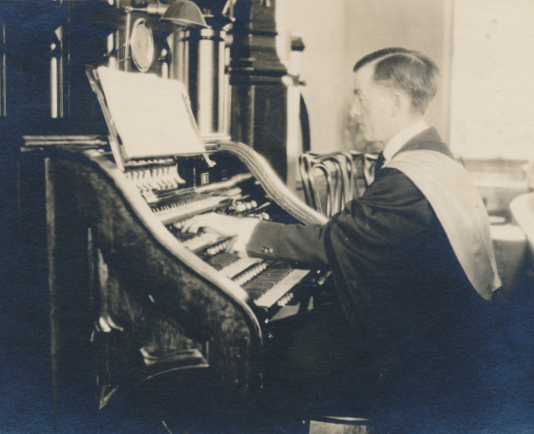

-1-MasterItem.svg)
Stories of Westminster United Church & its People / Page
141
Going back to 1912
The opening service in our new building Sunday, June 16, 1912 was attended by
1300 people.
Mr. M.W. Mawer was the choir director and Dr. R.D Fletcher was the organist. The
choir anthem
that service was Mendelssohn’s
O, Clap Your Hands
, suitable for such an exciting occasion.
Music at Westminster
Sour notes in 1916: There was a discussion at the Session meeting about Choir
music. The opinion was expressed that the Choir
was making a mistake by rendering so much high- class music to the exclusion of
the hymns that people love to hear and sing.
“Give the congregation,” said the speaker, “something that they can continue to sing after leaving Church.”
There was also a threat by Mrs. Fowler, alto soloist, that she would resign from
the choir if her salary was reduced by $150 per year.
Choir Director Mawer’s life was further complicated by a bad relationship between him and soloist
Rhynd Jamison. Mr. Jamison
lost and was asked to leave.
Mr. Mawer was then succeeded as choir director by Ernest
Vinen who was hired at a salary of $1100/year plus an
extra $15/year to keep the organ tuned. He left in 1919
when Mr. Roy Wideman took over. Herb Sadler took over
as organist in 1920 with Mr. Wideman continuing as choir
director till 1921 when Wideman resigned. Herb was then
asked to add choir director to his responsibilities on a
temporary basis. However, he proved so successful in
the dual role he was asked to take it on as a permanent
assignment. Which he continued to do till his death
in 1955 (pictured, Herb at the original console).
